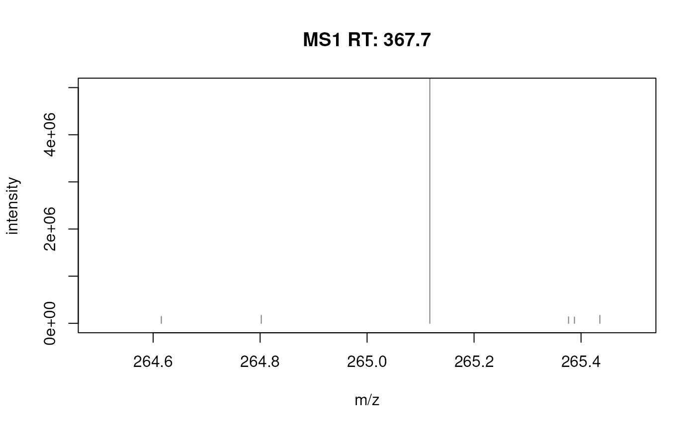
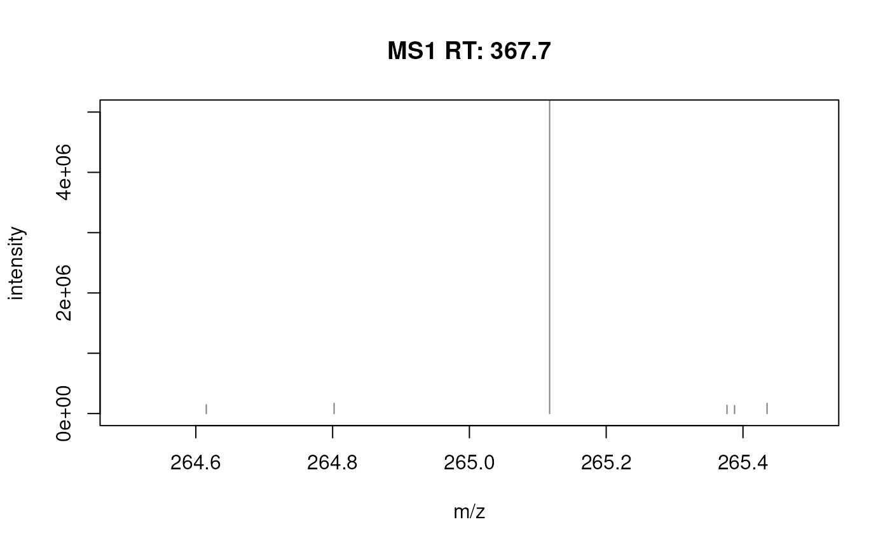

A variety of functions to filter or subset Spectra objects are available.
These can be generally separated into two main classes: I) classical
subset operations that immediately reduce the number of spectra in the
object and II) filters that reduce the content of the object without
changing its length (i.e. the number of spectra). The latter can be further
subdivided into functions that affect the content of the spectraData (i.e.
the general spectrum metadata) and those that reduce the content of the
object's peaksData (i.e. the m/z and intensity values of a spectrum's
mass peaks).
A description of functions from these 3 different categories are given below
in sections Subset Spectra, Filter content of spectraData() and
Filter content of peaksData(), respectively.
Usage
deisotopeSpectra(
x,
substDefinition = isotopicSubstitutionMatrix("HMDB_NEUTRAL"),
tolerance = 0,
ppm = 20,
charge = 1
)
reduceSpectra(x, tolerance = 0, ppm = 20)
filterPrecursorMaxIntensity(x, tolerance = 0, ppm = 20)
filterPrecursorIsotopes(
x,
tolerance = 0,
ppm = 20,
substDefinition = isotopicSubstitutionMatrix("HMDB_NEUTRAL")
)
filterPrecursorPeaks(
object,
tolerance = 0,
ppm = 20,
mz = c("==", ">="),
msLevel. = uniqueMsLevels(object)
)
# S4 method for class 'Spectra'
dropNaSpectraVariables(object)
# S4 method for class 'Spectra'
selectSpectraVariables(
object,
spectraVariables = union(spectraVariables(object), peaksVariables(object))
)
# S4 method for class 'Spectra'
x[i, j, ..., drop = FALSE]
# S4 method for class 'Spectra'
filterAcquisitionNum(
object,
n = integer(),
dataStorage = character(),
dataOrigin = character()
)
# S4 method for class 'Spectra'
filterEmptySpectra(object)
# S4 method for class 'Spectra'
filterDataOrigin(object, dataOrigin = character())
# S4 method for class 'Spectra'
filterDataStorage(object, dataStorage = character())
# S4 method for class 'Spectra'
filterFourierTransformArtefacts(
object,
halfWindowSize = 0.05,
threshold = 0.2,
keepIsotopes = TRUE,
maxCharge = 5,
isotopeTolerance = 0.005
)
# S4 method for class 'Spectra'
filterIntensity(
object,
intensity = c(0, Inf),
msLevel. = uniqueMsLevels(object),
...
)
# S4 method for class 'Spectra'
filterIsolationWindow(object, mz = numeric())
# S4 method for class 'Spectra'
filterMsLevel(object, msLevel. = integer())
# S4 method for class 'Spectra'
filterMzRange(
object,
mz = numeric(),
msLevel. = uniqueMsLevels(object),
keep = TRUE
)
# S4 method for class 'Spectra'
filterMzValues(
object,
mz = numeric(),
tolerance = 0,
ppm = 20,
msLevel. = uniqueMsLevels(object),
keep = TRUE
)
# S4 method for class 'Spectra'
filterPolarity(object, polarity = integer())
# S4 method for class 'Spectra'
filterPrecursorMz(object, mz = numeric())
# S4 method for class 'Spectra'
filterPrecursorMzRange(object, mz = numeric())
# S4 method for class 'Spectra'
filterPrecursorMzValues(object, mz = numeric(), ppm = 20, tolerance = 0)
# S4 method for class 'Spectra'
filterPrecursorCharge(object, z = integer())
# S4 method for class 'Spectra'
filterPrecursorScan(object, acquisitionNum = integer(), f = dataOrigin(object))
# S4 method for class 'Spectra'
filterRt(object, rt = numeric(), msLevel. = integer())
# S4 method for class 'Spectra'
filterRanges(
object,
spectraVariables = character(),
ranges = numeric(),
match = c("all", "any")
)
# S4 method for class 'Spectra'
filterValues(
object,
spectraVariables = character(),
values = numeric(),
ppm = 0,
tolerance = 0,
match = c("all", "any")
)Arguments
- x
Spectraobject.- substDefinition
For
deisotopeSpectra()andfilterPrecursorIsotopes():matrixordata.framewith definitions of isotopic substitutions. Uses by default isotopic substitutions defined from all compounds in the Human Metabolome Database (HMDB). SeeMetaboCoreUtils::isotopologues()orMetaboCoreUtils::isotopicSubstitutionMatrix()in the MetaboCoreUtils for details.- tolerance
For
filterMzValues()andreduceSpectra():numeric(1)allowing to define a constant maximal accepted difference between m/z values for peaks to be matched (or grouped). ForcontainsMz()it can also be of length equalmzto specify a different tolerance for each m/z value. ForfilterPrecursorMaxIntensity():numeric(1)defining the (constant) maximal accepted difference of precursor m/z values of spectra for grouping them into precursor groups. ForfilterPrecursorIsotopes(): passed directly to theMetaboCoreUtils::isotopologues()function. ForfilterValues():numericof any length allowing to define a maximal accepted difference between user inputvaluesand thespectraVariablesvalues. If it is not equal to the length of the value provided with parameterspectraVariables,tolerance[1]will be recycled. Default istolerance = 0.- ppm
For
filterMzValues()andreduceSpectra():numeric(1)defining a relative, m/z-dependent, maximal accepted difference between m/z values for peaks to be matched (or grouped). ForfilterPrecursorMaxIntensity():numeric(1)defining the relative maximal accepted difference of precursor m/z values of spectra for grouping them into precursor groups. ForfilterPrecursorIsotopes(): passed directly to theMetaboCoreUtils::isotopologues()function. ForfilterValues():numericof any length allowing to define a maximal accepted difference between user inputvaluesand thespectraVariablesvalues. If it is not equal to the length of the value provided with parameterspectraVariables,ppm[1]will be recycled.- charge
For
deisotopeSpectra(): expected charge of the ionized compounds. SeeMetaboCoreUtils::isotopologues()for details.- object
Spectraobject.- mz
For
filterIsolationWindow():numeric(1)with the m/z value to filter the object. ForfilterPrecursorMz()andfilterMzRange():numeric(2)defining the lower and upper m/z boundary. ForfilterMzValues()andfilterPrecursorMzValues():numericwith the m/z values to match peaks or precursor m/z against. ForfilterPrecursorPeaks():character(1)defining whether mass peaks with an m/z matching the spectrum's precursor m/z (mz = "==", the default) or mass peaks with a m/z that is equal or larger (mz = ">=") should be removed.- msLevel.
integerdefining the MS level(s) of the spectra to which the function should be applied (defaults to all MS levels ofobject. ForfilterMsLevel(): the MS level to whichobjectshould be subsetted.- spectraVariables
For
selectSpectraVariables():characterwith the names of the spectra variables to which the backend should be subsetted. ForfilterRanges()andfilterValues():charactervector specifying the column(s) fromspectraData(object)on which to filter the data and that correspond to the the names of the spectra variables that should be used for the filtering.- i
For
[:integer,logicalorcharacterto subset the object.- j
For
[: not supported.- ...
Additional arguments.
- drop
For
[: not considered.- n
for
filterAcquisitionNum():integerwith the acquisition numbers to filter for.- dataStorage
For
filterDataStorage():characterto define which spectra to keep. ForfilterAcquisitionNum(): optionally specify if filtering should occur only for spectra of selecteddataStorage.- dataOrigin
For
filterDataOrigin():characterto define which spectra to keep. ForfilterAcquisitionNum(): optionally specify if filtering should occurr only for spectra of selecteddataOrigin.- halfWindowSize
For
filterFourierTransformArtefacts():numeric(1)defining the m/z window left and right of a peak where to remove fourier transform artefacts.- threshold
For
filterFourierTransformArtefacts(): the relative intensity (to a peak) below which peaks are considered fourier artefacts. Defaults tothreshold = 0.2hence removing peaks that have an intensity below 0.2 times the intensity of the tested peak (within the selectedhalfWindowSize).- keepIsotopes
For
filterFourierTransformArtefacts(): whether isotope peaks should not be removed as fourier artefacts.- maxCharge
For
filterFourierTransformArtefacts(): the maximum charge to be considered for isotopes.- isotopeTolerance
For
filterFourierTransformArtefacts(): the m/ztoleranceto be used to define whether peaks might be isotopes of the current tested peak.- intensity
For
filterIntensity():numericof length 1 or 2 defining either the lower or the lower and upper intensity limit for the filtering, or afunctionthat takes the intensities as input and returns alogical(same length then peaks in the spectrum) whether the peak should be retained or not. Defaults tointensity = c(0, Inf)thus only peaks withNAintensity are removed.- keep
For
filterMzValues()andfilterMzRange():logical(1)whether the matching peaks should be retained (keep = TRUE, the default) or dropped (keep = FALSE).- polarity
for
filterPolarity():integerspecifying the polarity to to subsetobject.- z
For
filterPrecursorCharge():integer()with the precursor charges to be used as filter.- acquisitionNum
for
filterPrecursorScan():integerwith the acquisition number of the spectra to which the object should be subsetted.- f
For
filterPrecursorScan(): defining which spectra belong to the same original data file (sample): Defaults tof = dataOrigin(x).- rt
for
filterRt():numeric(2)defining the retention time range to be used to subset/filterobject.- ranges
for
filterRanges(): Anumericvector of paired values (upper and lower boundary) that define the ranges to filter theobject. These paired values need to be in the same order as thespectraVariablesparameter (see below).- match
For
filterRanges()andfilterValues():character(1)defining whether the condition has to match for all providedranges/values(match = "all"; the default), or for any of them (match = "any") for spectra to be retained.- values
for
filterValues(): Anumericvector that define the values to filter the Spectra data. These values need to be in the same order as thespectraVariablesparameter.
Subset Spectra
These functions affect the number of spectra in a Spectra object creating
a subset of the original object without affecting its content.
[: subsets the spectra keeping only selected elements (i). The method always returns aSpectraobject.filterAcquisitionNum(): filters the object keeping only spectra matching the provided acquisition numbers (argumentn). IfdataOriginordataStorageis also provided,objectis subsetted to the spectra with an acquisition number equal tonin spectra with matching dataOrigin or dataStorage values retaining all other spectra. Returns the filteredSpectra.filterDataOrigin(): filters the object retaining spectra matching the provideddataOrigin. ParameterdataOriginhas to be of typecharacterand needs to match exactly the data origin value of the spectra to subset. Returns the filteredSpectraobject (with spectra ordered according to the provideddataOriginparameter).filterDataStorage(): filters the object retaining spectra stored in the specifieddataStorage. ParameterdataStoragehas to be of typecharacterand needs to match exactly the data storage value of the spectra to subset. Returns the filteredSpectraobject (with spectra ordered according to the provideddataStorageparameter).filterEmptySpectra(): removes empty spectra (i.e. spectra without peaks). Returns the filteredSpectraobject (with spectra in their original order).filterIsolationWindow(): retains spectra that containmzin their isolation window m/z range (i.e. with anisolationWindowLowerMz<=mzandisolationWindowUpperMz>=mz. Returns the filteredSpectraobject (with spectra in their original order).filterMsLevel(): filters object by MS level keeping only spectra matching the MS level specified with argumentmsLevel. Returns the filteredSpectra(with spectra in their original order).filterPolarity(): filters the object keeping only spectra matching the provided polarity. Returns the filteredSpectra(with spectra in their original order).filterPrecursorCharge(): retains spectra with the defined precursor charge(s).filterPrecursorIsotopes(): groups MS2 spectra based on their precursor m/z and precursor intensity into predicted isotope groups and keep for each only the spectrum representing the monoisotopic precursor. MS1 spectra are returned as is. See documentation fordeisotopeSpectra()below for details on isotope prediction and parameter description.filterPrecursorMaxIntensity(): filters theSpectrakeeping for groups of (MS2) spectra with similar precursor m/z values (given parametersppmandtolerance) the one with the highest precursor intensity. The function filters only MS2 spectra and returns all MS1 spectra. If precursor intensities areNAfor all spectra within a spectra group, the first spectrum of that groups is returned. Note: some manufacturers don't provide precursor intensities. These can however also be estimated withestimatePrecursorIntensity().filterPrecursorMzRange()(previouslyfilterPrecursorMz()which is now deprecated): retains spectra with a precursor m/z within the provided m/z range. See examples for details on selecting spectra with a precursor m/z for a target m/z accepting a small difference in ppm.filterPrecursorMzValues(): retains spectra with precursor m/z matching any of the provided m/z values (givenppmandtolerance). Spectra with missing precursor m/z value (e.g. MS1 spectra) are dropped.filterPrecursorScan(): retains parent (e.g. MS1) and children scans (e.g. MS2) of acquisition numberacquisitionNum. Returns the filteredSpectra(with spectra in their original order). Parameterfallows to define which spectra belong to the same sample or original data file ( defaults tof = dataOrigin(object)).filterRanges(): allows filtering of theSpectraobject based on user defined numeric ranges (parameterranges) for one or more available spectra variables in object (spectra variable names can be specified with parameterspectraVariables). Spectra for which the value of a spectra variable is within it's defined range are retained. If multiple ranges/spectra variables are defined, thematchparameter can be used to specify whether all conditions (match = "all"; the default) or if any of the conditions must match (match = "any"; all spectra for which values are within any of the provided ranges are retained).filterRt(): retains spectra of MS levelmsLevelwith retention times (in seconds) within (>=)rt[1]and (<=)rt[2]. This retention time filter is applied to all spectra (regardless of their MS level) ifmsLevel. = integer()(the default). Returns the filteredSpectra(with spectra in their original order).filterValues(): allows filtering of theSpectraobject based on similarities of numeric values of one or morespectraVariables(object)(parameterspectraVariables) to provided values (parametervalues) given acceptable differences (parameters tolerance and ppm). If multiple values/spectra variables are defined, thematchparameter can be used to specify whether all conditions (match = "all"; the default) or if any of the conditions must match (match = "any"; all spectra for which values are within any of the provided ranges are retained).
Filter content of spectraData()
The functions described in this section filter the content from a
Spectra's spectra data, i.e. affect values of, or complete, spectra
variables. None of these functions reduces the object's number of spectra.
dropNaSpectraVariables(): removes spectra variables (i.e. columns in the object'sspectraDatathat contain only missing values (NA). Note that while columns with onlyNAs are removed, aspectraData()call afterdropNaSpectraVariables()might still show columns containingNAvalues for core spectra variables. The total number of spectra is not changed by this function.selectSpectraVariables(): reduces the information within the object to the selected spectra variables: all data for variables not specified will be dropped. For mandatory columns (i.e., those listed bycoreSpectraVariables(), such as msLevel, rtime ...) only the values will be dropped but not the variable itself. Additional (or user defined) spectra variables will be completely removed. Returns the filteredSpectra.
Filter content of peaksData()
The functions described in this section filter the content of the
Spectra's peaks data, i.e. either the number or the values (m/z or
intensity values) of the mass peaks. Also, the actual operation is only
executed once peaks data is accessed (through peaksData(),
mz() or intensity()) or applyProcessing() is called.
These operations don't affect the number of spectra in the Spectra object.
deisotopeSpectra(): deisotopes each spectrum keeping only the monoisotopic peak for groups of isotopologues. Isotopologues are estimated using theMetaboCoreUtils::isotopologues()function from the MetaboCoreUtils package. Note that the default parameters for isotope prediction/detection have been determined using data from the Human Metabolome Database (HMDB) and isotopes for elements other than CHNOPS might not be detected. See parametersubstDefinitionin the documentation ofMetaboCoreUtils::isotopologues()for more information. The approach and code to define the parameters for isotope prediction is described here.filterFourierTransformArtefacts(): removes (Orbitrap) fast fourier artefact peaks from spectra (see examples below). The function iterates through all intensity ordered peaks in a spectrum and removes all peaks with an m/z within +/-halfWindowSizeof the current peak if their intensity is lower thanthresholdtimes the current peak's intensity. Additional parameterskeepIsotopes,maxChargeandisotopeToleranceallow to avoid removing of potential[13]Cisotope peaks (maxChargebeing the maximum charge that should be considered andisotopeTolerancethe absolute acceptable tolerance for matching their m/z). SeefilterFourierTransformArtefacts()for details and background anddeisitopeSpectra()for an alternative.filterIntensity(): filters mass peaks in each spectrum keeping only those with intensities that are within the provided range or match the criteria of the provided function. For the former, parameterintensityhas to be anumericdefining the intensity range, for the latter afunctionthat takes the intensity values of the spectrum and returns alogicalwhether the peak should be retained or not (see examples below for details) - additional parameters to the function can be passed with.... To remove only peaks with intensities below a certain threshold, say 100, useintensity = c(100, Inf). Note: also a single value can be passed with theintensityparameter in which case an upper limit ofInfis used. Note that this function removes also peaks with missing intensities (i.e. an intensity ofNA). ParametermsLevel.allows to restrict the filtering to spectra of the specified MS level(s).filterMzRange(): filters mass peaks in the object keeping or removing those in each spectrum that are within the provided m/z range. Whether peaks are retained or removed can be configured with parameterkeep(defaultkeep = TRUE).filterMzValues(): filters mass peaks in the object keeping all peaks in each spectrum that match the provided m/z value(s) (forkeep = TRUE, the default) or removing all of them (forkeep = FALSE). The m/z matching considers also the absolutetoleranceand m/z-relativeppmvalues.toleranceandppmhave to be of length 1.filterPeaksRanges(): filters mass peaks of aSpectraobject using any set of range-based filters on numeric spectra or peaks variables. SeefilterPeaksRanges()for more information.filterPrecursorPeaks(): removes peaks from each spectrum inobjectwith an m/z equal or larger than the m/z of the precursor, depending on the value of parametermz: formz = ==" (the default) peaks with matching m/z (considering an absolute and relative acceptable difference depending ontoleranceandppm, respectively) are removed. Formz = ">="all peaks with an m/z larger or equal to the precursor m/z (minustoleranceand theppmof the precursor m/z) are removed. ParametermsLevel.allows to restrict the filter to certain MS levels (by default the filter is applied to all MS levels). Note that no peaks are removed if the precursor m/z isNA` (e.g. typically for MS1 spectra).reduceSpectra(): keeps for groups of peaks with similar m/z values in (givenppmandtolerance) in each spectrum only the mass peak with the highest intensity removing all other peaks hence reducing each spectrum to the highest intensity peaks per peak group. Peak groups are defined using thegroup()function from the MsCoreUtils package. See also thecombinePeaks()function for an alternative function to combine peaks within each spectrum.
See also
combineSpectra()for functions to combine or aggregateSpectra.combinePeaks()for functions to combine or aggregate aSpectra'speaksData()
Examples
## Load a `Spectra` object with LC-MS/MS data.
fl <- system.file("TripleTOF-SWATH", "PestMix1_DDA.mzML",
package = "msdata")
sps_dda <- Spectra(fl)
sps_dda
#> MSn data (Spectra) with 7602 spectra in a MsBackendMzR backend:
#> msLevel rtime scanIndex
#> <integer> <numeric> <integer>
#> 1 1 0.231 1
#> 2 1 0.351 2
#> 3 1 0.471 3
#> 4 1 0.591 4
#> 5 1 0.711 5
#> ... ... ... ...
#> 7598 1 899.491 7598
#> 7599 1 899.613 7599
#> 7600 1 899.747 7600
#> 7601 1 899.872 7601
#> 7602 1 899.993 7602
#> ... 34 more variables/columns.
#>
#> file(s):
#> PestMix1_DDA.mzML
## -------- SUBSET SPECTRA --------
## Subset to the first 3 spectra
tmp <- sps_dda[1:3]
tmp
#> MSn data (Spectra) with 3 spectra in a MsBackendMzR backend:
#> msLevel rtime scanIndex
#> <integer> <numeric> <integer>
#> 1 1 0.231 1
#> 2 1 0.351 2
#> 3 1 0.471 3
#> ... 34 more variables/columns.
#>
#> file(s):
#> PestMix1_DDA.mzML
length(tmp)
#> [1] 3
## Subset to all MS2 spectra; this could be done with [, or, more
## efficiently, with the `filterMsLevel` function:
sps_dda[msLevel(sps_dda) == 2L]
#> MSn data (Spectra) with 2975 spectra in a MsBackendMzR backend:
#> msLevel rtime scanIndex
#> <integer> <numeric> <integer>
#> 1 2 7.216 58
#> 2 2 13.146 106
#> 3 2 13.556 108
#> 4 2 23.085 186
#> 5 2 25.055 201
#> ... ... ... ...
#> 2971 2 895.472 7570
#> 2972 2 895.592 7571
#> 2973 2 896.252 7575
#> 2974 2 896.662 7577
#> 2975 2 898.602 7591
#> ... 34 more variables/columns.
#>
#> file(s):
#> PestMix1_DDA.mzML
filterMsLevel(sps_dda, 2L)
#> MSn data (Spectra) with 2975 spectra in a MsBackendMzR backend:
#> msLevel rtime scanIndex
#> <integer> <numeric> <integer>
#> 1 2 7.216 58
#> 2 2 13.146 106
#> 3 2 13.556 108
#> 4 2 23.085 186
#> 5 2 25.055 201
#> ... ... ... ...
#> 2971 2 895.472 7570
#> 2972 2 895.592 7571
#> 2973 2 896.252 7575
#> 2974 2 896.662 7577
#> 2975 2 898.602 7591
#> ... 34 more variables/columns.
#>
#> file(s):
#> PestMix1_DDA.mzML
#> Processing:
#> Filter: select MS level(s) 2 [Mon Apr 7 11:32:18 2025]
## Filter the object keeping only MS2 spectra with an precursor m/z value
## between a specified range:
filterPrecursorMzRange(sps_dda, c(80, 90))
#> MSn data (Spectra) with 138 spectra in a MsBackendMzR backend:
#> msLevel rtime scanIndex
#> <integer> <numeric> <integer>
#> 1 2 13.556 108
#> 2 2 36.494 290
#> 3 2 41.684 329
#> 4 2 42.333 334
#> 5 2 43.273 340
#> ... ... ... ...
#> 134 2 879.043 7451
#> 135 2 884.043 7489
#> 136 2 884.103 7490
#> 137 2 889.513 7528
#> 138 2 892.542 7551
#> ... 34 more variables/columns.
#>
#> file(s):
#> PestMix1_DDA.mzML
#> Processing:
#> Filter: select spectra with a precursor m/z within [80, 90] [Mon Apr 7 11:32:18 2025]
## Filter the object to MS2 spectra with an precursor m/z matching a
## pre-defined value (given ppm and tolerance)
filterPrecursorMzValues(sps_dda, 85, ppm = 5, tolerance = 0.1)
#> MSn data (Spectra) with 14 spectra in a MsBackendMzR backend:
#> msLevel rtime scanIndex
#> <integer> <numeric> <integer>
#> 1 2 428.076 3664
#> 2 2 513.070 4648
#> 3 2 601.733 5307
#> 4 2 620.762 5455
#> 5 2 632.691 5542
#> ... ... ... ...
#> 10 2 746.243 6390
#> 11 2 788.320 6695
#> 12 2 821.767 6939
#> 13 2 838.156 7056
#> 14 2 844.176 7105
#> ... 34 more variables/columns.
#>
#> file(s):
#> PestMix1_DDA.mzML
#> Processing:
#> Filter: select spectra with precursor m/z matching 85 [Mon Apr 7 11:32:18 2025]
## The `filterRanges()` function allows to filter a `Spectra` based on
## numerical ranges of any of its (numerical) spectra variables.
## First, determine the variable(s) on which to base the filtering:
sv <- c("rtime", "precursorMz", "peaksCount")
## Note that ANY variables can be chosen here, and as many as wanted.
## Define the ranges (pairs of values with lower and upper boundary) to be
## used for the individual spectra variables. The first two values will be
## used for the first spectra variable (e.g., `"rtime"` here), the next two
## for the second (e.g. `"precursorMz"` here) and so on:
ranges <- c(30, 350, 200, 500, 350, 600)
## Input the parameters within the filterRanges function:
filt_spectra <- filterRanges(sps_dda, spectraVariables = sv,
ranges = ranges)
filt_spectra
#> MSn data (Spectra) with 3 spectra in a MsBackendMzR backend:
#> msLevel rtime scanIndex
#> <integer> <numeric> <integer>
#> 1 2 237.460 1810
#> 2 2 343.322 2601
#> 3 2 346.872 2629
#> ... 34 more variables/columns.
#>
#> file(s):
#> PestMix1_DDA.mzML
#> Processing:
#> Filter: select spectra with a rtime within: [30, 350] [Mon Apr 7 11:32:18 2025]
#> Filter: select spectra with a precursorMz within: [200, 500] [Mon Apr 7 11:32:18 2025]
#> Filter: select spectra with a peaksCount within: [350, 600] [Mon Apr 7 11:32:18 2025]
## `filterRanges()` can also be used to filter a `Spectra` object with
## multiple ranges for the same `spectraVariable` (e.g, here `"rtime"`)
sv <- c("rtime", "rtime")
ranges <- c(30, 100, 200, 300)
filt_spectra <- filterRanges(sps_dda, spectraVariables = sv,
ranges = ranges, match = "any")
filt_spectra
#> MSn data (Spectra) with 1252 spectra in a MsBackendMzR backend:
#> msLevel rtime scanIndex
#> <integer> <numeric> <integer>
#> 1 1 30.050 241
#> 2 2 30.314 242
#> 3 1 30.452 243
#> 4 1 30.601 244
#> 5 1 30.721 245
#> ... ... ... ...
#> 1248 1 299.176 2266
#> 1249 1 299.304 2267
#> 1250 2 299.575 2268
#> 1251 1 299.713 2269
#> 1252 2 299.985 2270
#> ... 34 more variables/columns.
#>
#> file(s):
#> PestMix1_DDA.mzML
#> Processing:
#> Filter: select spectra with a rtime within: [30, 100] [Mon Apr 7 11:32:18 2025]
#> Filter: select spectra with a rtime within: [200, 300] [Mon Apr 7 11:32:18 2025]
## While `filterRanges()` filtered on numeric ranges, `filterValues()`
## allows to filter an object matching spectra variable values to user
## provided values (allowing to configure allowed differences using the
## `ppm` and `tolerance` parameters).
## First determine the variable(s) on which to base the filtering:
sv <- c("rtime", "precursorMz")
## Note that ANY variables can be chosen here, and as many as wanted.
## Define the values that will be used to filter the spectra based on their
## similarities to their respective `spectraVariables`.
## The first values in the parameters values, tolerance and ppm will be
## used for the first spectra variable (e.g. `"rtime"` here), the next for
## the second (e.g. `"precursorMz"` here) and so on:
values <- c(350, 80)
tolerance <- c(100, 0.1)
ppm <- c(0, 50)
## Input the parameters within the `filterValues()` function:
filt_spectra <- filterValues(sps_dda, spectraVariables = sv,
values = values, tolerance = tolerance, ppm = ppm)
filt_spectra
#> MSn data (Spectra) with 1 spectra in a MsBackendMzR backend:
#> msLevel rtime scanIndex
#> <integer> <numeric> <integer>
#> 1 2 427.546 3657
#> ... 34 more variables/columns.
#>
#> file(s):
#> PestMix1_DDA.mzML
#> Processing:
#> Filter: select spectra with a rtime similar to: 350 [Mon Apr 7 11:32:18 2025]
#> Filter: select spectra with a precursorMz similar to: 80 [Mon Apr 7 11:32:18 2025]
## -------- FILTER SPECTRA DATA --------
## Remove spectra variables without content (i.e. with only missing values)
sps_noNA <- dropNaSpectraVariables(sps_dda)
## This reduced the size of the object slightly
print(object.size(sps_dda), unit = "MB")
#> 2.3 Mb
print(object.size(sps_noNA), unit = "MB")
#> 2 Mb
## With the `selectSpectraVariables()` function it is in addition possible
## to subset the data of a `Spectra` to the selected columns/variables,
## keeping only their data:
tmp <- selectSpectraVariables(sps_dda, c("msLevel", "mz", "intensity",
"scanIndex"))
print(object.size(tmp), units = "MB")
#> 0.1 Mb
## Except the selected variables, all data is now removed. Accessing
## core spectra variables still works, but returns only NA
rtime(tmp) |> head()
#> [1] NA NA NA NA NA NA
## -------- FILTER PEAKS DATA --------
## `filterMzValues()` filters the mass peaks data of a `Spectra` retaining
## only those mass peaks with an m/z value matching the provided value(s).
sps_sub <- filterMzValues(sps_dda, mz = c(103, 104), tolerance = 0.3)
## The filtered `Spectra` has the same length
length(sps_dda)
#> [1] 7602
length(sps_sub)
#> [1] 7602
## But the number of mass peaks changed
lengths(sps_dda) |> head()
#> [1] 223 211 227 210 220 228
lengths(sps_sub) |> head()
#> [1] 2 2 1 2 2 2
## This function can also be used to remove specific peaks from a spectrum
## by setting `keep = FALSE`.
sps_sub <- filterMzValues(sps_dda, mz = c(103, 104),
tolerance = 0.3, keep = FALSE)
lengths(sps_sub) |> head()
#> [1] 221 209 226 208 218 226
## With the `filterMzRange()` function it is possible to keep (or remove)
## mass peaks with m/z values within a specified numeric range.
sps_sub <- filterMzRange(sps_dda, mz = c(100, 150))
lengths(sps_sub) |> head()
#> [1] 54 55 52 59 60 52
## See also the `filterPeaksRanges()` function for a more flexible framework
## to filter mass peaks
## Removing fourier transform artefacts seen in Orbitra data.
## Loading an Orbitrap spectrum with artefacts.
data(fft_spectrum)
plotSpectra(fft_spectrum, xlim = c(264.5, 265.5))
 plotSpectra(fft_spectrum, xlim = c(264.5, 265.5), ylim = c(0, 5e6))
fft_spectrum <- filterFourierTransformArtefacts(fft_spectrum)
fft_spectrum
#> MSn data (Spectra) with 1 spectra in a MsBackendDataFrame backend:
#> msLevel rtime scanIndex
#> <integer> <numeric> <integer>
#> 1 1 367.665 195
#> ... 33 more variables/columns.
#> Lazy evaluation queue: 1 processing step(s)
#> Processing:
#> Switch backend from MsBackendMzR to MsBackendDataFrame [Mon Nov 22 14:14:45 2021]
#> Remove fast fourier artefacts. [Mon Apr 7 11:32:21 2025]
plotSpectra(fft_spectrum, xlim = c(264.5, 265.5), ylim = c(0, 5e6))
plotSpectra(fft_spectrum, xlim = c(264.5, 265.5), ylim = c(0, 5e6))
fft_spectrum <- filterFourierTransformArtefacts(fft_spectrum)
fft_spectrum
#> MSn data (Spectra) with 1 spectra in a MsBackendDataFrame backend:
#> msLevel rtime scanIndex
#> <integer> <numeric> <integer>
#> 1 1 367.665 195
#> ... 33 more variables/columns.
#> Lazy evaluation queue: 1 processing step(s)
#> Processing:
#> Switch backend from MsBackendMzR to MsBackendDataFrame [Mon Nov 22 14:14:45 2021]
#> Remove fast fourier artefacts. [Mon Apr 7 11:32:21 2025]
plotSpectra(fft_spectrum, xlim = c(264.5, 265.5), ylim = c(0, 5e6))
 ## Using a few examples peaks in your data you can optimize the parameters
fft_spectrum_filtered <- filterFourierTransformArtefacts(fft_spectrum,
halfWindowSize = 0.2,
threshold = 0.005,
keepIsotopes = TRUE,
maxCharge = 5,
isotopeTolerance = 0.005
)
fft_spectrum_filtered
#> MSn data (Spectra) with 1 spectra in a MsBackendDataFrame backend:
#> msLevel rtime scanIndex
#> <integer> <numeric> <integer>
#> 1 1 367.665 195
#> ... 33 more variables/columns.
#> Lazy evaluation queue: 2 processing step(s)
#> Processing:
#> Switch backend from MsBackendMzR to MsBackendDataFrame [Mon Nov 22 14:14:45 2021]
#> Remove fast fourier artefacts. [Mon Apr 7 11:32:21 2025]
#> Remove fast fourier artefacts. [Mon Apr 7 11:32:21 2025]
length(mz(fft_spectrum_filtered)[[1]])
#> [1] 297
plotSpectra(fft_spectrum_filtered, xlim = c(264.5, 265.5), ylim = c(0, 5e6))

## *Reducing* a `Spectra` keeping for groups of mass peaks (characterized
## by similarity of their m/z values) only one representative peak. This
## function helps cleaning fragment spectra.
## Filter the data set to MS2 spectra
ms2 <- filterMsLevel(sps_dda, 2L)
## For groups of fragment peaks with a difference in m/z < 0.1, keep only
## the largest one.
ms2_red <- reduceSpectra(ms2, ppm = 0, tolerance = 0.1)
lengths(ms2) |> tail()
#> [1] 23 3 1 35 2 7
lengths(ms2_red) |> tail()
#> [1] 19 2 1 27 1 7
## Using a few examples peaks in your data you can optimize the parameters
fft_spectrum_filtered <- filterFourierTransformArtefacts(fft_spectrum,
halfWindowSize = 0.2,
threshold = 0.005,
keepIsotopes = TRUE,
maxCharge = 5,
isotopeTolerance = 0.005
)
fft_spectrum_filtered
#> MSn data (Spectra) with 1 spectra in a MsBackendDataFrame backend:
#> msLevel rtime scanIndex
#> <integer> <numeric> <integer>
#> 1 1 367.665 195
#> ... 33 more variables/columns.
#> Lazy evaluation queue: 2 processing step(s)
#> Processing:
#> Switch backend from MsBackendMzR to MsBackendDataFrame [Mon Nov 22 14:14:45 2021]
#> Remove fast fourier artefacts. [Mon Apr 7 11:32:21 2025]
#> Remove fast fourier artefacts. [Mon Apr 7 11:32:21 2025]
length(mz(fft_spectrum_filtered)[[1]])
#> [1] 297
plotSpectra(fft_spectrum_filtered, xlim = c(264.5, 265.5), ylim = c(0, 5e6))

## *Reducing* a `Spectra` keeping for groups of mass peaks (characterized
## by similarity of their m/z values) only one representative peak. This
## function helps cleaning fragment spectra.
## Filter the data set to MS2 spectra
ms2 <- filterMsLevel(sps_dda, 2L)
## For groups of fragment peaks with a difference in m/z < 0.1, keep only
## the largest one.
ms2_red <- reduceSpectra(ms2, ppm = 0, tolerance = 0.1)
lengths(ms2) |> tail()
#> [1] 23 3 1 35 2 7
lengths(ms2_red) |> tail()
#> [1] 19 2 1 27 1 7